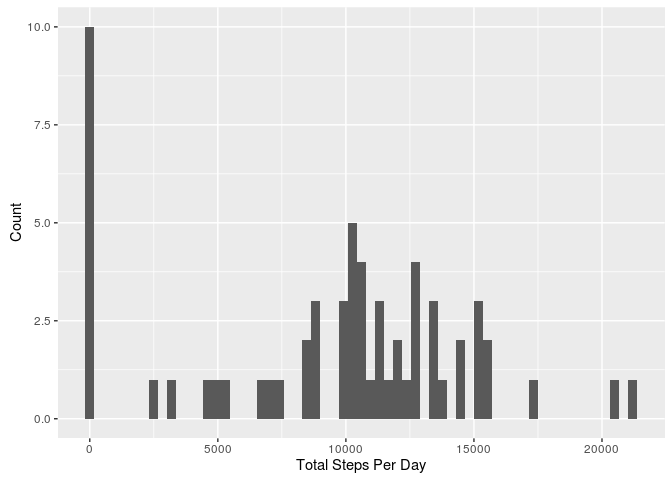
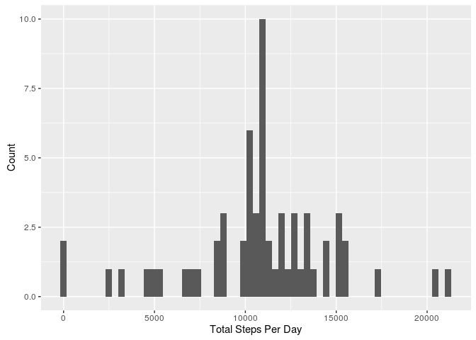
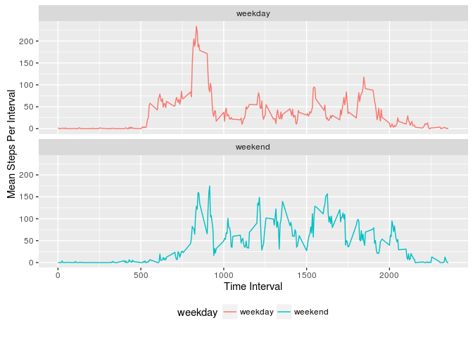

Summary of Activity
DZastera
August 7, 2016
suppressMessages(library(dplyr))
suppressMessages(library(ggplot2))
act <- read.csv("activity.csv")Total Steps Per Day
The total number of steps taken per day is summarized in this table:
tot_steps <- act %>% group_by(date) %>% summarise(Total = sum(steps, na.rm=TRUE))
print(data.frame(tot_steps), row.names=FALSE)## date Total
## 2012-10-01 0
## 2012-10-02 126
## 2012-10-03 11352
## 2012-10-04 12116
## 2012-10-05 13294
## 2012-10-06 15420
## 2012-10-07 11015
## 2012-10-08 0
## 2012-10-09 12811
## 2012-10-10 9900
## 2012-10-11 10304
## 2012-10-12 17382
## 2012-10-13 12426
## 2012-10-14 15098
## 2012-10-15 10139
## 2012-10-16 15084
## 2012-10-17 13452
## 2012-10-18 10056
## 2012-10-19 11829
## 2012-10-20 10395
## 2012-10-21 8821
## 2012-10-22 13460
## 2012-10-23 8918
## 2012-10-24 8355
## 2012-10-25 2492
## 2012-10-26 6778
## 2012-10-27 10119
## 2012-10-28 11458
## 2012-10-29 5018
## 2012-10-30 9819
## 2012-10-31 15414
## 2012-11-01 0
## 2012-11-02 10600
## 2012-11-03 10571
## 2012-11-04 0
## 2012-11-05 10439
## 2012-11-06 8334
## 2012-11-07 12883
## 2012-11-08 3219
## 2012-11-09 0
## 2012-11-10 0
## 2012-11-11 12608
## 2012-11-12 10765
## 2012-11-13 7336
## 2012-11-14 0
## 2012-11-15 41
## 2012-11-16 5441
## 2012-11-17 14339
## 2012-11-18 15110
## 2012-11-19 8841
## 2012-11-20 4472
## 2012-11-21 12787
## 2012-11-22 20427
## 2012-11-23 21194
## 2012-11-24 14478
## 2012-11-25 11834
## 2012-11-26 11162
## 2012-11-27 13646
## 2012-11-28 10183
## 2012-11-29 7047
## 2012-11-30 0The historgram of steps per day is presented in this plot:
ggplot(tot_steps, aes(x=Total))+
geom_histogram(bins=61)+
labs(x = "Total Steps Per Day", y = "Count")
The mean number of steps per day is 9354.2295082 and the median number of steps per day is 10395.
Average Daily Pattern
step_ts <- act %>% group_by(interval) %>% summarise(avg=mean(steps, na.rm=TRUE))
ggplot(step_ts, aes(x=interval, y=avg))+
geom_line()+
labs(x = "Time Interval", y = "Mean Steps Per Interval")
The maximum average number of steps taken occurs in the 392 interval.
Analysis of NAs
The total number of missing values in the dataset is 2304.
NAs in the dataset can be replaced by the interval mean with:
imputed <- act %>% group_by(interval) %>% mutate(imp_step = mean(steps, na.rm=TRUE))
imputed$steps[is.na(imputed$steps)] <- imputed$imp_step[is.na(imputed$steps)]Now, the total steps taken each day is:
tot_steps_imp <- imputed %>% group_by(date) %>% summarise(Total = sum(steps, na.rm=TRUE))
print(data.frame(tot_steps_imp), row.names=FALSE)## date Total
## 2012-10-01 10766.19
## 2012-10-02 126.00
## 2012-10-03 11352.00
## 2012-10-04 12116.00
## 2012-10-05 13294.00
## 2012-10-06 15420.00
## 2012-10-07 11015.00
## 2012-10-08 10766.19
## 2012-10-09 12811.00
## 2012-10-10 9900.00
## 2012-10-11 10304.00
## 2012-10-12 17382.00
## 2012-10-13 12426.00
## 2012-10-14 15098.00
## 2012-10-15 10139.00
## 2012-10-16 15084.00
## 2012-10-17 13452.00
## 2012-10-18 10056.00
## 2012-10-19 11829.00
## 2012-10-20 10395.00
## 2012-10-21 8821.00
## 2012-10-22 13460.00
## 2012-10-23 8918.00
## 2012-10-24 8355.00
## 2012-10-25 2492.00
## 2012-10-26 6778.00
## 2012-10-27 10119.00
## 2012-10-28 11458.00
## 2012-10-29 5018.00
## 2012-10-30 9819.00
## 2012-10-31 15414.00
## 2012-11-01 10766.19
## 2012-11-02 10600.00
## 2012-11-03 10571.00
## 2012-11-04 10766.19
## 2012-11-05 10439.00
## 2012-11-06 8334.00
## 2012-11-07 12883.00
## 2012-11-08 3219.00
## 2012-11-09 10766.19
## 2012-11-10 10766.19
## 2012-11-11 12608.00
## 2012-11-12 10765.00
## 2012-11-13 7336.00
## 2012-11-14 10766.19
## 2012-11-15 41.00
## 2012-11-16 5441.00
## 2012-11-17 14339.00
## 2012-11-18 15110.00
## 2012-11-19 8841.00
## 2012-11-20 4472.00
## 2012-11-21 12787.00
## 2012-11-22 20427.00
## 2012-11-23 21194.00
## 2012-11-24 14478.00
## 2012-11-25 11834.00
## 2012-11-26 11162.00
## 2012-11-27 13646.00
## 2012-11-28 10183.00
## 2012-11-29 7047.00
## 2012-11-30 10766.19The historgram of steps per day with the imputed data is:
ggplot(tot_steps_imp, aes(x=Total))+
geom_histogram(bins=61)+
labs(x = "Total Steps Per Day", y = "Count")
The mean number of steps per day is 1.076618910^{4} and the median number of steps per day is 1.076618910^{4}.
The imputed dataset has a larger number of mean steps per day and a larger median number of steps per day.
Impact of Weekdays
act$weekday <- ifelse(weekdays(as.Date(act$date)) %in% c("Saturday","Sunday"),"weekend", "weekday") step_ts_weekday <- act %>% group_by(interval, weekday) %>% summarise(avg=mean(steps, na.rm=TRUE))
ggplot(step_ts_weekday, aes(x=interval, y=avg, colour=weekday))+
geom_line()+
facet_wrap(~weekday, ncol=1)+
labs(x = "Time Interval", y = "Mean Steps Per Interval")+
theme(legend.position="bottom")